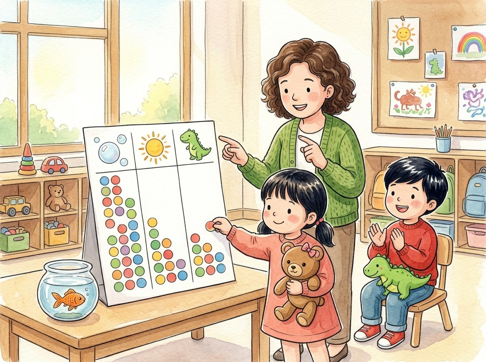

Kindergarten · Social studies · SS.K-2.IS.7
A name for the fish
A story about how a class decides something all together.
Three new words
To pick one choice so a group of people can decide something.
To say numbers in order to find out how many there are.
More than half of a group.
Tap a picture to hear the word and what it means.
The story
A little orange fish came to the classroom. But it has no name!
Everyone wants to choose the name. How will they decide?
"Let's vote!" says Ms. Luna. "Each of you picks the name you like best."
There are three ideas: Bubbles, Sunny and Rex.
Adrián wants Rex, like a dinosaur. Génesis wants Bubbles.
Each child puts a sticker under the name they choose.
Then Ms. Luna counts the stickers with everyone.
There are ten votes. Bubbles gets six, Sunny gets three, and Rex gets one. More than half the class chose Bubbles. That is a majority! The fish will be called Bubbles.
Adrián smiles. "That's okay. We decided all together."
And Bubbles swims a happy circle in the fishbowl.
Questions
Listen to the question and tap the right picture.
-
Question A. How did they decide the fish's name?
They decided by voting: each child picked the name they liked best.
-
Question B. How did each child vote?
Each child put a sticker under the name they chose.
-
Question C. Why is the fish called Bubbles?
Bubbles got six of the ten votes. That is more than half: the majority picked it.